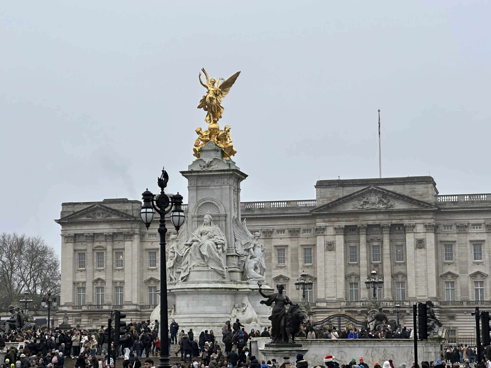
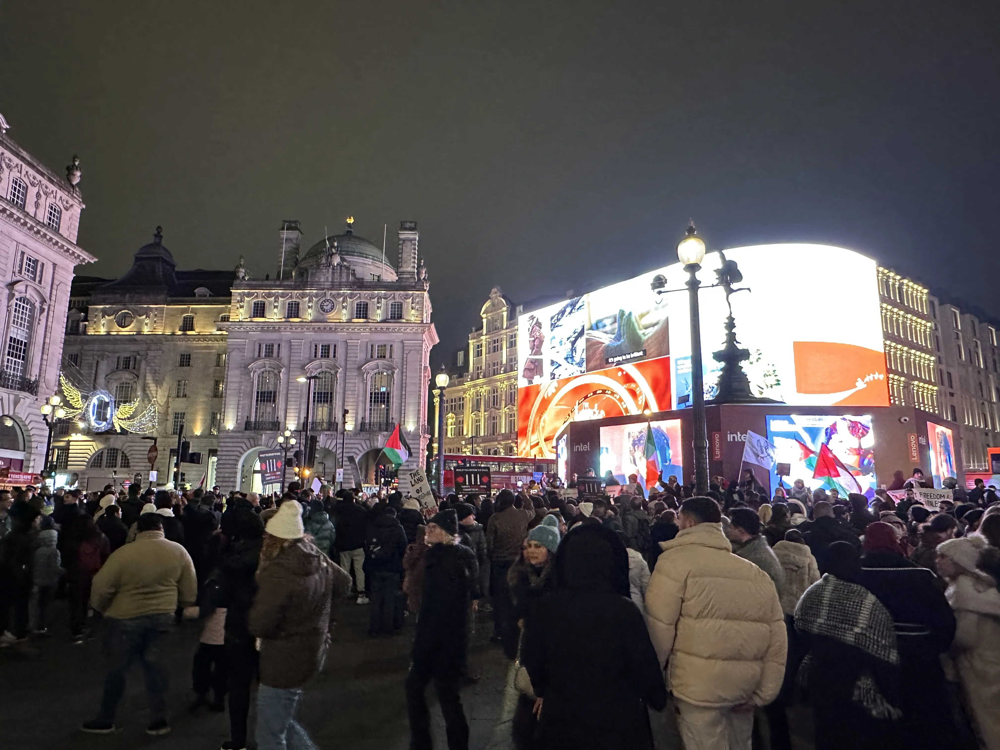

In December 2024, I embarked on my maiden trip to Europe, with London, United Kingdom, as my first
destination. London's rich legacy and historical significance made it an obvious choice. Whether through
references in pop culture (think James Bond, Harry Potter, Dr. Who), the much storied albeit
controversial British Empire, or
through the works of classic authors, this global city has always held a special allure for me. So, as
much as it was a holiday, it was also pretty much a learning trip, with countless sights to behold.
To refresh my writing presentation, I will not be writing in detail about my experience this time.
Instead,
I will be sharing some observations that stood out to me during my trip. Short and simple... 😊
Long history - London has a truly long history. Founded by the Romans as Londinium in 43 AD, the
city has evolved through centuries as a hub of commerce, culture, and governance. Its storied past
is reflected in its streets, buildings, and landmarks, many of which tell tales of eras long gone.
It is common to see buildings which date back to the 10th century, with structures from the 1700s
forming an integral part of the city.

Global city - London is a vibrant melting pot of people, cultures and languages. Walking through its
streets, it felt as though people from every continent had converged here, whether to work, study,
or explore as tourists.
Shopping - Iconic locations like Oxford Street, with its endless array of shops and department
stores, are a haven for shopping lovers. Knightsbridge is
home to the world-famous Harrods, which houses grandeur food halls and high-end fashion boutiques.
The festive decorations with twinkling lights lining the streets and beautifully decorated
storefronts create a warm,
inviting atmosphere. The only downside was the sheer size of the crowds, which made navigating the
streets and travelling using the Tube a bit of a challenge.

Iconic landmarks - London is home to some of the world's most recognisable landmarks, such as the
Tower of London, Buckingham Palace, the Houses of Parliament, Westminster Abbey, the Gherkin and the
Shard. The juxtaposition of historical landmarks with skyscrapers like the Gherkin and
the Shard symbolises the city's spirit.
Overall, our London trip was truly relaxing and enjoyable, providing my wife and I ample time to
discover the city's sights and stories, and to recharge for 2025 😊. Happy New Year everyone!